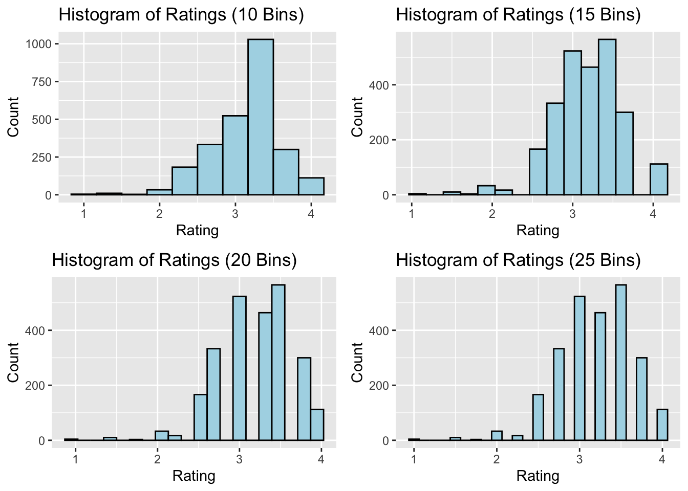
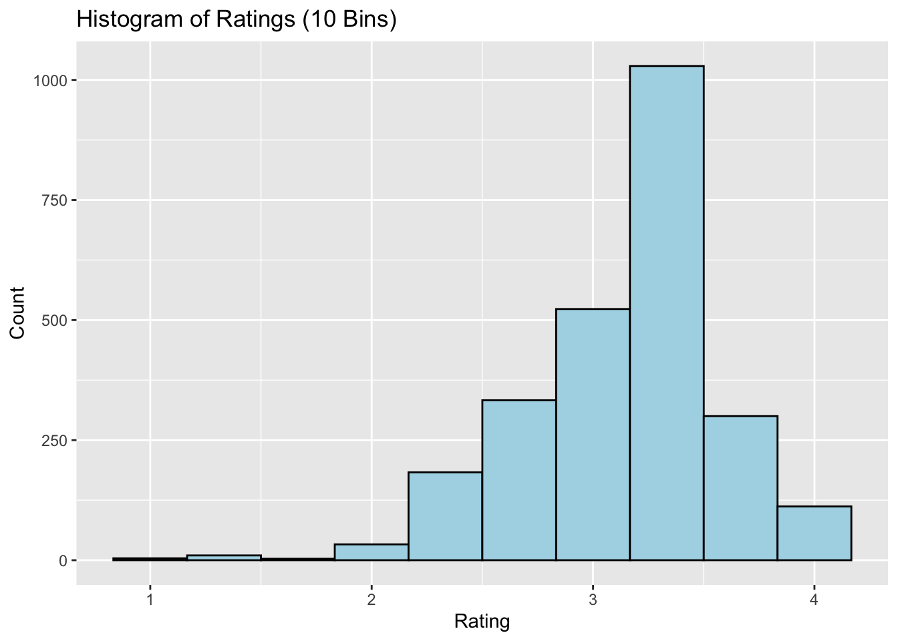
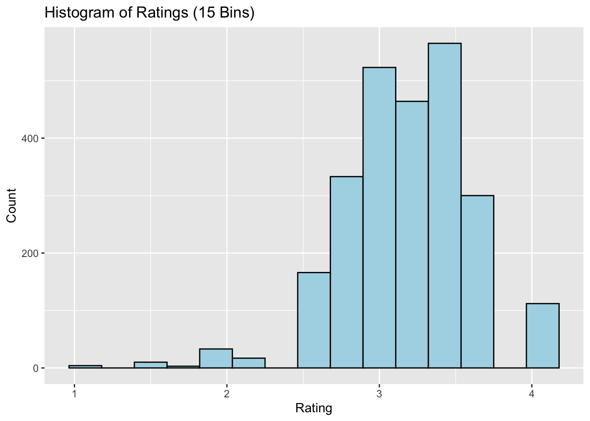
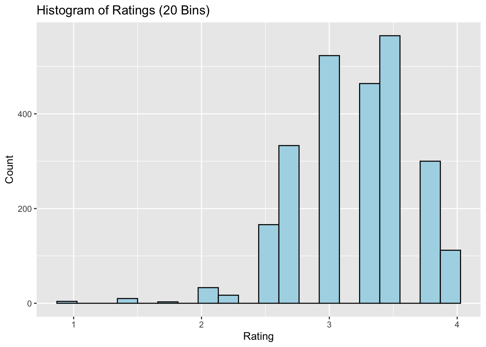
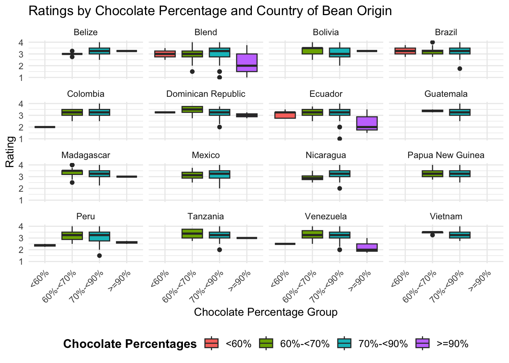
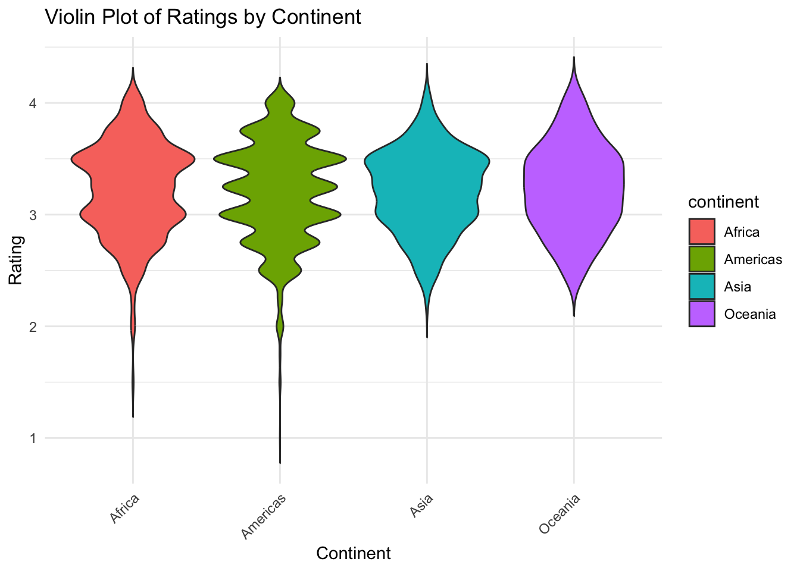
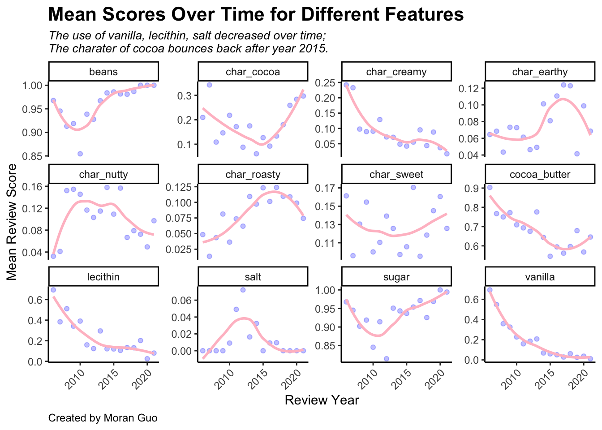

## Install the tidyverse package if you don't have it
if (!require("tidyverse", quietly = TRUE)) {
install.packages("tidyverse")
}Project 1
project 1
projects
Finding great chocolate bars!
This project, as the rest of the course, is adapted from the version Stephanie C. Hicks designed and maintained in 2021 and 2022. Check the recent changes to this file through the GitHub history.
Background
Due date: September 15th at 11:59pm
To submit your project
Please write up your project using R Markdown and knitr. Compile your document as an HTML file and submit your HTML file to the dropbox on Courseplus. Please show all your code for each of the answers to each part.
To get started, watch this video on setting up your R Markdown document.
Install tidyverse
Before attempting this assignment, you should first install the tidyverse package if you have not already. The tidyverse package is actually a collection of many packages that serves as a convenient way to install many packages without having to do them one by one. This can be done with the install.packages() function.
Running this function will install a host of other packages so it make take a minute or two depending on how fast your computer is. Once you have installed it, you will want to load the package.
library("tidyverse")Data
That data for this part of the assignment comes from TidyTuesday, which is a weekly podcast and global community activity brought to you by the R4DS Online Learning Community. The goal of TidyTuesday is to help R learners learn in real-world contexts.

[Source: TidyTuesday]
{kind=link}
If we look at the TidyTuesday github repo from 2022, we see this dataset chocolate bar reviews.
To access the data, you need to install the tidytuesdayR R package and use the function tt_load() with the date of ‘2022-01-18’ to load the data.
## Install the tidytuesdayR package if you don't have it
if (!require("tidytuesdayR", quietly = TRUE)) {
install.packages("tidytuesdayR")
}
## For the GitHub version of tidytuesdayR (in case the CRAN version is not available)
## you'll need the "remotes" package to install it.
## See for example https://github.com/dslc-io/tidytuesdayR/issues/94 which led
## to tidytuesdayR not been available from CRAN at the end of August 2024
## Install the remotes package if you don't have it
if (!require("remotes", quietly = TRUE)) {
install.packages("remotes")
}
## Install the tidytuesdayR package (from GitHub) if you don't have it
if (!require("tidytuesdayR", quietly = TRUE)) {
remotes::install_github("dslc-io/tidytuesdayR")
}This is how you can download the data.
tuesdata <- tidytuesdayR::tt_load("2022-01-18")
chocolate <- tuesdata$chocolateHowever, if you use this code, you will hit an API limit after trying to compile the document a few times. Instead, I suggest you use the following code below. Here, I provide the code below for you to avoid re-downloading data:
library("here")
library("tidyverse")
# tests if a directory named "data" exists locally
if (!dir.exists(here("data"))) {
dir.create(here("data"))
}
# saves data only once (not each time you knit a R Markdown)
if (!file.exists(here("data", "chocolate.RDS"))) {
url_csv <- "https://raw.githubusercontent.com/rfordatascience/tidytuesday/master/data/2022/2022-01-18/chocolate.csv"
chocolate <- readr::read_csv(url_csv)
# save the file to RDS objects
saveRDS(chocolate, file = here("data", "chocolate.RDS"))
}Here we read in the .RDS dataset locally from our computing environment:
chocolate <- readRDS(here("data", "chocolate.RDS"))
as_tibble(chocolate)# A tibble: 2,530 × 10
ref company_manufacturer company_location review_date
<dbl> <chr> <chr> <dbl>
1 2454 5150 U.S.A. 2019
2 2458 5150 U.S.A. 2019
3 2454 5150 U.S.A. 2019
4 2542 5150 U.S.A. 2021
5 2546 5150 U.S.A. 2021
6 2546 5150 U.S.A. 2021
7 2542 5150 U.S.A. 2021
8 797 A. Morin France 2012
9 797 A. Morin France 2012
10 1011 A. Morin France 2013
# ℹ 2,520 more rows
# ℹ 6 more variables: country_of_bean_origin <chr>,
# specific_bean_origin_or_bar_name <chr>, cocoa_percent <chr>,
# ingredients <chr>, most_memorable_characteristics <chr>, rating <dbl>We can take a glimpse at the data
glimpse(chocolate)Rows: 2,530
Columns: 10
$ ref <dbl> 2454, 2458, 2454, 2542, 2546, 2546, 2…
$ company_manufacturer <chr> "5150", "5150", "5150", "5150", "5150…
$ company_location <chr> "U.S.A.", "U.S.A.", "U.S.A.", "U.S.A.…
$ review_date <dbl> 2019, 2019, 2019, 2021, 2021, 2021, 2…
$ country_of_bean_origin <chr> "Tanzania", "Dominican Republic", "Ma…
$ specific_bean_origin_or_bar_name <chr> "Kokoa Kamili, batch 1", "Zorzal, bat…
$ cocoa_percent <chr> "76%", "76%", "76%", "68%", "72%", "8…
$ ingredients <chr> "3- B,S,C", "3- B,S,C", "3- B,S,C", "…
$ most_memorable_characteristics <chr> "rich cocoa, fatty, bready", "cocoa, …
$ rating <dbl> 3.25, 3.50, 3.75, 3.00, 3.00, 3.25, 3…Here is a data dictionary for what all the column names mean:
Part 1: Explore data
In this part, use functions from dplyr and ggplot2 to answer the following questions.
- Make a histogram of the
ratingscores to visualize the overall distribution of scores. Change the number of bins from the default to 10, 15, 20, and 25. Pick on the one that you think looks the best. Explain what the difference is when you change the number of bins and explain why you picked the one you did.
library(ggplot2)
#library(gridExtra)
# Create the histograms using ggplot2
plot_bins <- ggplot(chocolate, aes(x = rating)) +
geom_histogram(fill = "lightblue", color = "black") +
labs(title = "Histogram of Ratings (default Bins)", x = "Rating", y = "Count")
plot_10bins <- ggplot(chocolate, aes(x = rating)) +
geom_histogram(bins = 10, fill = "lightblue", color = "black") +
labs(title = "Histogram of Ratings (10 Bins)", x = "Rating", y = "Count")
plot_15bins <- ggplot(chocolate, aes(x = rating)) +
geom_histogram(bins = 15, fill = "lightblue", color = "black") +
labs(title = "Histogram of Ratings (15 Bins)", x = "Rating", y = "Count")
plot_20bins <- ggplot(chocolate, aes(x = rating)) +
geom_histogram(bins = 20, fill = "lightblue", color = "black") +
labs(title = "Histogram of Ratings (20 Bins)", x = "Rating", y = "Count")
plot_25bins <- ggplot(chocolate, aes(x = rating)) +
geom_histogram(bins = 25, fill = "lightblue", color = "black") +
labs(title = "Histogram of Ratings (25 Bins)", x = "Rating", y = "Count")
plot_bins`stat_bin()` using `bins = 30`. Pick better value with `binwidth`.
plot_10bins
plot_15bins
plot_20bins
plot_25bins
I think bins # = 15 gives the best histogram to (1) avoid sharp separations between bins and (2) give a more detail description of the overall trend of rating than 10 bins.
- Consider the countries where the beans originated from. How many reviews come from each country of bean origin?
library(dplyr)
country <- chocolate %>%
group_by(country_of_bean_origin) %>%
summarise(number_of_review = n()) %>%
arrange(desc(number_of_review))
country# A tibble: 62 × 2
country_of_bean_origin number_of_review
<chr> <int>
1 Venezuela 253
2 Peru 244
3 Dominican Republic 226
4 Ecuador 219
5 Madagascar 177
6 Blend 156
7 Nicaragua 100
8 Bolivia 80
9 Colombia 79
10 Tanzania 79
# ℹ 52 more rows- What is average
ratingscores from reviews of chocolate bars that have Ecuador ascountry_of_bean_originin this dataset? For this same set of reviews, also calculate (1) the total number of reviews and (2) the standard deviation of theratingscores. Your answer should be a new data frame with these three summary statistics in three columns. Label the name of these columnsmean,sd, andtotal.
library(dplyr)
ecuador_statistics <- chocolate %>%
filter(country_of_bean_origin == "Ecuador") %>%
summarise(
mean = mean(rating, na.rm = TRUE),
sd = sd(rating, na.rm = TRUE),
total = n()
)
ecuador_statistics# A tibble: 1 × 3
mean sd total
<dbl> <dbl> <int>
1 3.16 0.512 219The average rating scores from Ecuador chocolate bars is \(3.16\), with standard deviation of \(0.51\). There are a total of \(219\) observations included.
- Which company location makes the best chocolate (or has the highest ratings on average) with beans from Ecuador?
library(dplyr)
best_company_ecu <- chocolate %>%
filter(country_of_bean_origin == "Ecuador") %>%
group_by(company_location) %>%
summarise(avg_rating = mean(rating, na.rm = TRUE)) %>%
arrange(desc(avg_rating))
best_company_ecu# A tibble: 25 × 2
company_location avg_rating
<chr> <dbl>
1 Australia 3.81
2 Switzerland 3.75
3 New Zealand 3.62
4 Hungary 3.5
5 Israel 3.5
6 Netherlands 3.5
7 Singapore 3.5
8 South Korea 3.33
9 Canada 3.28
10 U.S.A. 3.26
# ℹ 15 more rowsFrom the results, we can see that Australia makes the best chocolate with beans from Ecuador.
- Calculate the average rating across all country of origins for beans. Which top 3 countries (for bean origin) have the highest ratings on average?
library(dplyr)
top_countries <- chocolate %>%
group_by(country_of_bean_origin) %>%
summarise(avg_rating = mean(rating, na.rm = TRUE)) %>%
arrange(desc(avg_rating))
top_3_countries <- head(top_countries, 3)
top_3_countries# A tibble: 3 × 2
country_of_bean_origin avg_rating
<chr> <dbl>
1 Tobago 3.62
2 China 3.5
3 Sao Tome & Principe 3.5 Tobago, China, and Sao Tome & Principe have the highest rating on average for the bean origin.
- Following up on the previous problem, now remove any countries of bean origins that have less than 10 chocolate bar reviews. Now, which top 3 countries have the highest ratings on average?
library(dplyr)
top_countries_ten_plus <- chocolate %>%
group_by(country_of_bean_origin) %>%
summarise(avg_rating = mean(rating, na.rm = TRUE),
total = n()) %>%
filter(total >= 10) %>%
arrange(desc(avg_rating))
top_3_countries_ten_plus <- head(top_countries_ten_plus, 3)
top_3_countries_ten_plus# A tibble: 3 × 3
country_of_bean_origin avg_rating total
<chr> <dbl> <int>
1 Solomon Islands 3.45 10
2 Congo 3.32 11
3 Cuba 3.29 12Solomon Islands, Congo, and Cuba have the highest ratings on average after filtering out those countries with fewer than 10 reviews.
- For this last part, let’s explore the relationship between percent chocolate and ratings.
Use the functions in dplyr, tidyr, and lubridate to perform the following steps to the chocolate dataset:
- Identify the countries of bean origin with at least 50 reviews. Remove reviews from countries are not in this list.
- Using the variable describing the chocolate percentage for each review, create a new column that groups chocolate percentages into one of four groups: (i) <60%, (ii) >=60 to <70%, (iii) >=70 to <90%, and (iii) >=90% (Hint check out the
substr()function in base R and thecase_when()function fromdplyr– see example below). - Using the new column described in #2, re-order the factor levels (if needed) to be starting with the smallest percentage group and increasing to the largest percentage group (Hint check out the
fct_relevel()function fromforcats). - For each country, make a set of four side-by-side boxplots plotting the groups on the x-axis and the ratings on the y-axis. These plots should be faceted by country.
On average, which category of chocolate percentage is most highly rated? Do these countries mostly agree or are there disagreements?
Hint: You may find the case_when() function useful in this part, which can be used to map values from one variable to different values in a new variable (when used in a mutate() call).
## Generate some random numbers
dat <- tibble(x = rnorm(100))
slice(dat, 1:3)# A tibble: 3 × 1
x
<dbl>
1 0.521
2 -1.20
3 -1.04 ## Create a new column that indicates whether the value of 'x' is positive or negative
dat %>%
mutate(is_positive = case_when(
x >= 0 ~ "Yes",
x < 0 ~ "No"
))# A tibble: 100 × 2
x is_positive
<dbl> <chr>
1 0.521 Yes
2 -1.20 No
3 -1.04 No
4 -0.821 No
5 -0.559 No
6 1.38 Yes
7 0.734 Yes
8 -0.270 No
9 1.07 Yes
10 -0.0502 No
# ℹ 90 more rowslibrary(dplyr)
library(tidyr)
library(ggplot2)
library(forcats)
countries_with_50_reviews <- chocolate %>%
group_by(country_of_bean_origin) %>%
summarise(total_reviews = n()) %>%
filter(total_reviews >= 50) %>%
pull(country_of_bean_origin) # Get list of countries with >= 50 reviews
chocolate_filtered <- chocolate %>%
filter(country_of_bean_origin %in% countries_with_50_reviews)
chocolate_filtered <- chocolate_filtered %>%
mutate(
chocolate_percentage = as.numeric(substr(cocoa_percent, 1, nchar(cocoa_percent)-1)),
percent_group = case_when(
chocolate_percentage < 60 ~ "<60%",
chocolate_percentage >= 60 & chocolate_percentage < 70 ~ "60%-<70%",
chocolate_percentage >= 70 & chocolate_percentage < 90 ~ "70%-<90%",
chocolate_percentage >= 90 ~ ">=90%"
)
)
chocolate_filtered <- chocolate_filtered %>%
mutate(percent_group = fct_relevel(percent_group, "<60%", "60%-<70%", "70%-<90%", ">=90%"))
ggplot(chocolate_filtered, aes(x = percent_group, y = rating, fill = percent_group)) +
geom_boxplot() +
facet_wrap(~ country_of_bean_origin) + # Facet by country
labs(title = "Ratings by Chocolate Percentage and Country of Bean Origin",
x = "Chocolate Percentage Group",
y = "Rating",
fill = "Chocolate Percentages") +
theme_minimal() +
theme(
axis.text.x = element_text(angle = 45, hjust = 1),
legend.position = "bottom",
legend.title = element_text(size = 12, face = "bold"),
legend.text = element_text(size = 10)
)
avg_ratings <- chocolate_filtered %>%
group_by(percent_group) %>%
summarise(avg_rating = mean(rating)) %>%
arrange(desc(avg_rating))
avg_ratings# A tibble: 4 × 2
percent_group avg_rating
<fct> <dbl>
1 60%-<70% 3.25
2 70%-<90% 3.22
3 <60% 2.96
4 >=90% 2.49agreement_countries <- chocolate_filtered %>%
group_by(country_of_bean_origin, percent_group) %>%
summarise(
average_rating = mean(rating, na.rm = TRUE)) %>%
spread(percent_group, average_rating)`summarise()` has grouped output by 'country_of_bean_origin'. You can override
using the `.groups` argument.agreement_countries# A tibble: 16 × 5
# Groups: country_of_bean_origin [16]
country_of_bean_origin `<60%` `60%-<70%` `70%-<90%` `>=90%`
<chr> <dbl> <dbl> <dbl> <dbl>
1 Belize NA 3 3.25 3.25
2 Blend 3 2.98 3.12 2.33
3 Bolivia NA 3.35 3.15 3.25
4 Brazil 3.25 3.25 3.27 NA
5 Colombia 2 3.15 3.22 NA
6 Dominican Republic 3.25 3.47 3.18 3
7 Ecuador 3.11 3.21 3.22 2.30
8 Guatemala NA 3.38 3.25 NA
9 Madagascar NA 3.37 3.24 3
10 Mexico NA 3.12 3.17 NA
11 Nicaragua NA 2.94 3.28 NA
12 Papua New Guinea NA 3.28 3.28 NA
13 Peru 2.38 3.25 3.20 2.62
14 Tanzania NA 3.33 3.23 3
15 Venezuela 2.5 3.31 3.24 2.25
16 Vietnam NA 3.44 3.28 NA So we can see from the average rating data that the category 60%-<70% has the highest average rating, with 9 out of 16 countries agree on that.
Part 2: Join two datasets together
The goal of this part of the assignment is to join two datasets together. gapminder is a R package that contains an excerpt from the Gapminder data.
Tasks
- Use this dataset it to create a new column called
continentin ourchocolatedataset1 that contains the continent name for each review where the country of bean origin is. - Only keep reviews that have reviews from countries of bean origin with at least 10 reviews.
- Also, remove the country of bean origin named
"Blend". - Make a set of violin plots with ratings on the y-axis and
continents on the x-axis.
Hint:
- Check to see if there are any
NAs in the new column. If there are anyNAs, add the continent name for each row.
# I use `gapminder` package to map country name to the corresponding continent name that country belongs to.
# install.packages('gapminder')
library(dplyr)
library(ggplot2)
library(gapminder)
country_to_continent <- gapminder %>%
select(country, continent) %>%
distinct()
# Left join two datasets
chocolate <- chocolate %>%
left_join(country_to_continent, by = c("country_of_bean_origin" = "country"))
# Remove origin where is `blend`
chocolate <- chocolate %>%
filter(country_of_bean_origin != "Blend")
# Filter for origins with >= 10 review
chocolate <- chocolate %>%
group_by(country_of_bean_origin) %>%
filter(n() >= 10) %>%
ungroup()
missing_continents <- chocolate %>%
filter(is.na(continent))
unique(missing_continents$country_of_bean_origin) [1] "Fiji" "Papua New Guinea" "Sao Tome" "Vanuatu"
[5] "Trinidad" "Belize" "Grenada" "Congo"
[9] "Solomon Islands" "St. Lucia" "U.S.A." # Manually assign continents with NA values
chocolate <- chocolate %>%
mutate(continent = case_when(
is.na(continent) & country_of_bean_origin %in% c("Fiji", "Papua New Guinea", "Vanuatu", "Solomon Islands") ~ "Oceania",
is.na(continent) & country_of_bean_origin %in% c("Sao Tome", "Congo") ~ "Africa",
is.na(continent) & country_of_bean_origin %in% c("Trinidad", "Belize", "Grenada", "St. Lucia", "U.S.A.") ~ "Americas",
TRUE ~ continent
))
# Check that all missing continents have been addressed
missing_continents <- chocolate %>%
filter(is.na(continent))
ggplot(chocolate, aes(x = continent, y = rating, fill = continent)) +
geom_violin(trim = FALSE) +
labs(title = "Violin Plot of Ratings by Continent",
x = "Continent",
y = "Rating") +
theme_minimal() +
theme(axis.text.x = element_text(angle = 45, hjust = 1)) # Rotate x-axis labels for readability
Part 3: Convert wide data into long data
The goal of this part of the assignment is to take a dataset that is either messy or simply not tidy and to make them tidy datasets. The objective is to gain some familiarity with the functions in the dplyr, tidyr packages. You may find it helpful to review the section on pivoting data from wide to long format and vice versa.
Tasks
We are going to create a set of features for us to plot over time. Use the functions in dplyr and tidyr to perform the following steps to the chocolate dataset:
- Create a new set of columns titled
beans,sugar,cocoa_butter,vanilla,letchin, andsaltthat contain a 1 or 0 representing whether or not that review for the chocolate bar contained that ingredient (1) or not (0). - Create a new set of columns titled
char_cocoa,char_sweet,char_nutty,char_creamy,char_roasty,char_earthythat contain a 1 or 0 representing whether or not that the most memorable characteristic for the chocolate bar had that word (1) or not (0). For example, if the word “sweet” appears in themost_memorable_characteristics, then record a 1, otherwise a 0 for that review in thechar_sweetcolumn (Hint: check outstr_detect()from thestringrpackage). - For each year (i.e.
review_date), calculate the mean value in each new column you created across all reviews for that year. (Hint: If all has gone well thus far, you should have a dataset with 16 rows and 13 columns). - Convert this wide dataset into a long dataset with a new
featureandmean_scorecolumn.
It should look something like this:
review_date feature mean_score
<dbl> <chr> <dbl>
2006 beans 0.967741935
2006 sugar 0.967741935
2006 cocoa_butter 0.903225806
2006 vanilla 0.693548387
2006 letchin 0.693548387
2006 salt 0.000000000
2006 char_cocoa 0.209677419
2006 char_sweet 0.161290323
2006 char_nutty 0.032258065
2006 char_creamy 0.241935484 Notes
You may need to use functions outside these packages to obtain this result.
Do not worry about the ordering of the rows or columns. Depending on whether you use
gather()orpivot_longer(), the order of your output may differ from what is printed above. As long as the result is a tidy data set, that is sufficient.
# Load necessary libraries
library(dplyr)
library(tidyr)
library(stringr)
chocolate <- readRDS(here("data", "chocolate.RDS"))
chocolate <- chocolate %>%
mutate(
ingredients = ifelse(is.na(ingredients), "none", ingredients),
beans = ifelse(str_detect(ingredients, "B"), 1, 0),
sugar = ifelse(str_detect(ingredients, "S,|S$"), 1, 0),
cocoa_butter = ifelse(str_detect(ingredients, "C"), 1, 0),
vanilla = ifelse(str_detect(ingredients, "V"), 1, 0),
lecithin = ifelse(str_detect(ingredients, "L"), 1, 0),
salt = ifelse(str_detect(ingredients, "Sa"), 1, 0)
)
chocolate <- chocolate %>%
mutate(
char_cocoa = ifelse(str_detect(most_memorable_characteristics, "cocoa"), 1, 0),
char_sweet = ifelse(str_detect(most_memorable_characteristics, "sweet"), 1, 0),
char_nutty = ifelse(str_detect(most_memorable_characteristics, "nutty"), 1, 0),
char_creamy = ifelse(str_detect(most_memorable_characteristics, "creamy"), 1, 0),
char_roasty = ifelse(str_detect(most_memorable_characteristics, "roasty"), 1, 0),
char_earthy = ifelse(str_detect(most_memorable_characteristics, "earthy"), 1, 0)
)
mean_by_year <- chocolate %>%
group_by(review_date) %>%
summarise(across(beans:salt, mean, na.rm = TRUE),
across(char_cocoa:char_earthy, mean, na.rm = TRUE))Warning: There was 1 warning in `summarise()`.
ℹ In argument: `across(beans:salt, mean, na.rm = TRUE)`.
ℹ In group 1: `review_date = 2006`.
Caused by warning:
! The `...` argument of `across()` is deprecated as of dplyr 1.1.0.
Supply arguments directly to `.fns` through an anonymous function instead.
# Previously
across(a:b, mean, na.rm = TRUE)
# Now
across(a:b, \(x) mean(x, na.rm = TRUE))long_data <- mean_by_year %>%
pivot_longer(cols = beans:char_earthy,
names_to = "feature",
values_to = "mean_score")
long_data# A tibble: 192 × 3
review_date feature mean_score
<dbl> <chr> <dbl>
1 2006 beans 0.968
2 2006 sugar 0.968
3 2006 cocoa_butter 0.903
4 2006 vanilla 0.694
5 2006 lecithin 0.694
6 2006 salt 0
7 2006 char_cocoa 0.210
8 2006 char_sweet 0.161
9 2006 char_nutty 0.0323
10 2006 char_creamy 0.242
# ℹ 182 more rowsPart 4: Data visualization
In this part of the project, we will continue to work with our now tidy song dataset from the previous part.
Tasks
Use the functions in ggplot2 package to make a scatter plot of the mean_scores (y-axis) over time (x-axis). There should be one plot (facet) for each feature. For full credit, your plot should include:
- An overall title for the plot and a subtitle summarizing key trends that you found. Also include a caption in the figure with your name.
- Both the observed points for the
mean_score, but also a smoothed non-linear pattern of the trend - All plots should be shown in the one figure
- There should be an informative x-axis and y-axis label
Consider playing around with the theme() function to make the figure shine, including playing with background colors, font, etc. See https://github.com/lcolladotor/jhustatcomputing/issues/4 for an example on how you can choose colors if you have too many categories.
Notes
You may need to use functions outside these packages to obtain this result.
Don’t worry about the ordering of the rows or columns. Depending on whether you use
gather()orpivot_longer(), the order of your output may differ from what is printed above. As long as the result is a tidy data set, that is sufficient.
library(ggplot2)
# Create the scatter plot with facets for each feature
ggplot(long_data, aes(x = review_date, y = mean_score)) +
geom_point(alpha = 0.25, color = "blue") +
geom_smooth(method = "loess", formula = y ~ x, se = FALSE, color = "pink") +
facet_wrap(~ feature, scales = "free_y") +
labs(
title = "Mean Scores Over Time for Different Features", # Overall title
subtitle = "The use of vanilla, lecithin, salt decreased over time;\nThe charater of cocoa bounces back after year 2015.",
x = "Review Year",
y = "Mean Review Score",
caption = "Created by Moran Guo" # Add your name in the caption
) +
theme_classic() +
theme(
plot.title = element_text(size = 16, face = "bold"),
plot.subtitle = element_text(size = 10, face = "italic"),
plot.caption = element_text(size = 9, hjust = 0),
axis.text.x = element_text(angle = 45, hjust = 1)
)
Part 5: Make the worst plot you can!
This sounds a bit crazy I know, but I want this to try and be FUN! Instead of trying to make a “good” plot, I want you to explore your creative side and make a really awful data visualization in every way. :)
Tasks
Using the chocolate dataset (or any of the modified versions you made throughout this assignment or anything else you wish you build upon it):
- Make the absolute worst plot that you can. You need to customize it in at least 7 ways to make it awful.
- In your document, write 1 - 2 sentences about each different customization you added (using bullets – i.e. there should be at least 7 bullet points each with 1-2 sentences), and how it could be useful for you when you want to make an awesome data visualization.
library(ggplot2)
ggplot(chocolate_filtered, aes(x = review_date, y = rating, fill = country_of_bean_origin)) +
geom_bar(stat = "identity") + # Use geom_bar for continuous data (bad choice)
scale_fill_manual(values = rep("yellow", 16)) + # All identical colors
theme_classic(base_size = 10) + # Font too large
theme(
panel.background = element_rect(fill = "pink"), # Distracting background color
axis.text.x = element_text(angle = 135, vjust = 0.5, color = "red", size = 15), # Over-rotated x-axis labels
legend.position = "top", # Legend in the wrong place, makes the plot hard to interpret
plot.title = element_text(hjust = 1.5, color = "green") # Incorrect justification and color
) +
labs(
title = "Absolutely Worst Plot", # Title that adds no meaning
x = "Time", # Vague label for x-axis
y = "Score", # Inaccurate label for y-axis
caption = "MaDE bY mORaN gUo" # Unnecessary caption
)
Why this plot is the worst plot?
Legend is too big so that it blocks the entire title. So a proper legend size should be utilized.
The legend also failed to serve the purpose of a legend because all the labels are the same color (yellow), and the color is also not ideal. This makes the whole plot hard to read.
The legend name
country_of_bean_originis too raw and need some meaningful interpretations, which could be as simple as “Bean Origin”..(If you can see the title) I used green colored font and misplaced the title.
The background color is pink, which should be the color that avoid using (generally), unless has its own significance, on a plot.
Because of the legend color (it’s the same for all countries), the entire plot lost its meaning. It is also a bad idea to use bar plot to visualize continuous data (such as rating).
The Y-axis label is entirely wrong. It should be named as “Number of Reviews” or similar.
The X-axis ticks label is over-rotated, making it a totally wrong option.
The caption is entirely unnecessary.
Part 6: Make my plot a better plot!
The goal is to take my sad looking plot and make it better! If you’d like an example, here is a tweet I came across of someone who gave a talk about how to zhoosh up your ggplots.
chocolate %>%
ggplot(aes(
x = as.factor(review_date),
y = rating,
fill = review_date
)) +
geom_violin()
Tasks
- You need to customize it in at least 7 ways to make it better.
- In your document, write 1 - 2 sentences about each different customization you added (using bullets – i.e. there should be at least 7 bullet points each with 1-2 sentences), describing how you improved it.
library(ggplot2)
library(dplyr)
library(viridis)Loading required package: viridisLitechocolate %>%
ggplot(aes(
x = as.factor(review_date),
y = rating,
fill = as.numeric(review_date)
)) +
geom_violin(trim = FALSE, color = "gray30", alpha = 0.8) +
scale_fill_gradient2(low = "lightgreen", mid = "white", high = "red", midpoint = 2015) +
geom_boxplot(width = 0.2, color = "black", outlier.shape = NA) +
labs(
title = "Distribution of Chocolate Ratings by Year",
subtitle = "Violin plots with inner boxplots",
x = "Review Year",
y = "Chocolate Rating",
fill = "Review Year",
caption = "Created by Moran Guo"
) +
theme_classic(base_size = 15) +
theme(
plot.title = element_text(size = 15, face = "bold", color = "black", hjust = 0.5),
plot.subtitle = element_text(size = 10, color = "black", hjust = 0.5),
axis.text.x = element_text(angle = 45, hjust = 1),
legend.position = "right",
legend.title = element_text( size = 12),
legend.text = element_text(size = 10)
)
The ways I made the plot to look better:
Used
geom_violin(trim = FALSE)to display the full range of the data and making the plot more informative.Added
geom_boxplotonto the violin plot and thus allowing for both detailed value (such as median, IQR, etc.) and high-level distributions of the data.Applied
Viridiscontinuous color palette to the plot, which is both colorblind-friendly and visually appealing. This enhances the plot’s aesthetic component.Used
theme_classic()to avoid the major grids of the plot and thus highlighting the distribution and also gives a cleaner background.Added informative & concise title and subtitle to the plot, depicting the gist of the plot.
Added informative legend title instead of using raw variable name
review_datewhich was unprofessional.Adjusted X and Y axis labels and rotated Y-axis ticks to avoid overlap and make them more accessible to the readers.
R session information
options(width = 120)
sessioninfo::session_info()─ Session info ───────────────────────────────────────────────────────────────────────────────────────────────────────
setting value
version R version 4.4.1 (2024-06-14)
os macOS Sonoma 14.4
system aarch64, darwin20
ui X11
language (EN)
collate en_US.UTF-8
ctype en_US.UTF-8
tz America/New_York
date 2024-09-14
pandoc 3.1.11 @ /Applications/RStudio.app/Contents/Resources/app/quarto/bin/tools/aarch64/ (via rmarkdown)
─ Packages ───────────────────────────────────────────────────────────────────────────────────────────────────────────
package * version date (UTC) lib source
cli 3.6.3 2024-06-21 [2] CRAN (R 4.4.0)
colorspace 2.1-1 2024-07-26 [2] CRAN (R 4.4.0)
digest 0.6.37 2024-08-19 [2] CRAN (R 4.4.1)
dplyr * 1.1.4 2023-11-17 [2] CRAN (R 4.4.0)
evaluate 0.24.0 2024-06-10 [2] CRAN (R 4.4.0)
fansi 1.0.6 2023-12-08 [2] CRAN (R 4.4.0)
farver 2.1.2 2024-05-13 [2] CRAN (R 4.4.0)
fastmap 1.2.0 2024-05-15 [2] CRAN (R 4.4.0)
forcats * 1.0.0 2023-01-29 [2] CRAN (R 4.4.0)
gapminder * 1.0.0 2023-03-10 [1] CRAN (R 4.4.0)
generics 0.1.3 2022-07-05 [2] CRAN (R 4.4.0)
ggplot2 * 3.5.1 2024-04-23 [2] CRAN (R 4.4.0)
glue 1.7.0 2024-01-09 [2] CRAN (R 4.4.0)
gridExtra 2.3 2017-09-09 [2] CRAN (R 4.4.0)
gtable 0.3.5 2024-04-22 [2] CRAN (R 4.4.0)
here * 1.0.1 2020-12-13 [2] CRAN (R 4.4.0)
hms 1.1.3 2023-03-21 [2] CRAN (R 4.4.0)
htmltools 0.5.8.1 2024-04-04 [2] CRAN (R 4.4.0)
htmlwidgets 1.6.4 2023-12-06 [2] CRAN (R 4.4.0)
jsonlite 1.8.8 2023-12-04 [2] CRAN (R 4.4.0)
knitr 1.48 2024-07-07 [2] CRAN (R 4.4.0)
labeling 0.4.3 2023-08-29 [2] CRAN (R 4.4.0)
lattice 0.22-6 2024-03-20 [2] CRAN (R 4.4.1)
lifecycle 1.0.4 2023-11-07 [2] CRAN (R 4.4.0)
lubridate * 1.9.3 2023-09-27 [2] CRAN (R 4.4.0)
magrittr 2.0.3 2022-03-30 [2] CRAN (R 4.4.0)
Matrix 1.7-0 2024-04-26 [2] CRAN (R 4.4.1)
mgcv 1.9-1 2023-12-21 [2] CRAN (R 4.4.1)
munsell 0.5.1 2024-04-01 [2] CRAN (R 4.4.0)
nlme 3.1-164 2023-11-27 [2] CRAN (R 4.4.1)
pillar 1.9.0 2023-03-22 [2] CRAN (R 4.4.0)
pkgconfig 2.0.3 2019-09-22 [2] CRAN (R 4.4.0)
purrr * 1.0.2 2023-08-10 [2] CRAN (R 4.4.0)
R6 2.5.1 2021-08-19 [2] CRAN (R 4.4.0)
readr * 2.1.5 2024-01-10 [2] CRAN (R 4.4.0)
rlang 1.1.4 2024-06-04 [2] CRAN (R 4.4.0)
rmarkdown 2.28 2024-08-17 [2] CRAN (R 4.4.0)
rprojroot 2.0.4 2023-11-05 [2] CRAN (R 4.4.0)
rstudioapi 0.16.0 2024-03-24 [2] CRAN (R 4.4.0)
scales 1.3.0 2023-11-28 [2] CRAN (R 4.4.0)
sessioninfo 1.2.2 2021-12-06 [2] CRAN (R 4.4.0)
stringi 1.8.4 2024-05-06 [2] CRAN (R 4.4.0)
stringr * 1.5.1 2023-11-14 [2] CRAN (R 4.4.0)
tibble * 3.2.1 2023-03-20 [2] CRAN (R 4.4.0)
tidyr * 1.3.1 2024-01-24 [2] CRAN (R 4.4.0)
tidyselect 1.2.1 2024-03-11 [2] CRAN (R 4.4.0)
tidyverse * 2.0.0 2023-02-22 [2] CRAN (R 4.4.0)
timechange 0.3.0 2024-01-18 [2] CRAN (R 4.4.0)
tzdb 0.4.0 2023-05-12 [2] CRAN (R 4.4.0)
utf8 1.2.4 2023-10-22 [2] CRAN (R 4.4.0)
vctrs 0.6.5 2023-12-01 [2] CRAN (R 4.4.0)
viridis * 0.6.5 2024-01-29 [2] CRAN (R 4.4.0)
viridisLite * 0.4.2 2023-05-02 [2] CRAN (R 4.4.0)
withr 3.0.1 2024-07-31 [2] CRAN (R 4.4.0)
xfun 0.47 2024-08-17 [2] CRAN (R 4.4.0)
yaml 2.3.10 2024-07-26 [2] CRAN (R 4.4.0)
[1] /Users/raymond/Library/R/arm64/4.4/library
[2] /Library/Frameworks/R.framework/Versions/4.4-arm64/Resources/library
──────────────────────────────────────────────────────────────────────────────────────────────────────────────────────Footnotes
Use the full
chocolatedata, regardless of any filtering you might have learned how to do on part 1.↩︎